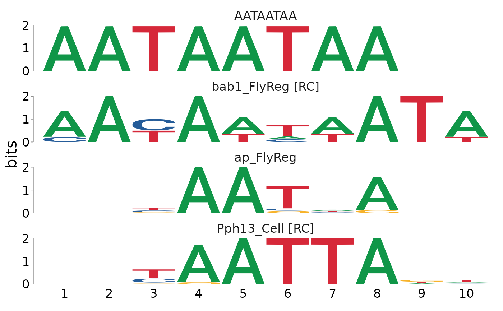
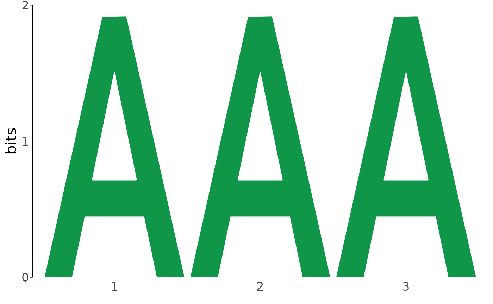
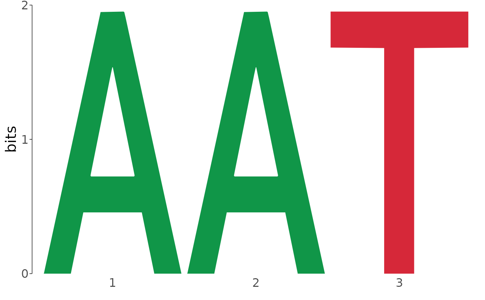

Although TomTom does a good job of matching unknown motifs to known motifs, sometimes the top hit is not the correct assignment. It can be useful to manually inspect the hits. This function provides a quick utility to compare matches.
view_tomtom_hits(results, top_n = "all")
| results | results data.frame from [runTomTom()] |
|---|---|
| top_n | number of matched motifs to return in plot (default: "all") |
plot of input motif vs the top n number of tomtom matched motifs. If no match found, will plot "No Match". Note: the "No Match" plots are not amenable to ggplot theme() manipulations, while all others are.
This is intended to be a function used interactively and may not always be the best tool for creating publication-quality figures. Results with matches return ggseqlogo outputs which can be further manipulated using [ggplot2::theme()] calls, but results containing no matches are static plots.
results <- importTomTomXML(system.file("extdata", "tomtom.xml", package = "memes")) # show top 3 hits view_tomtom_hits(results, top_n = 3)#> [[1]]#> #> [[2]]#> #> [[3]]#>